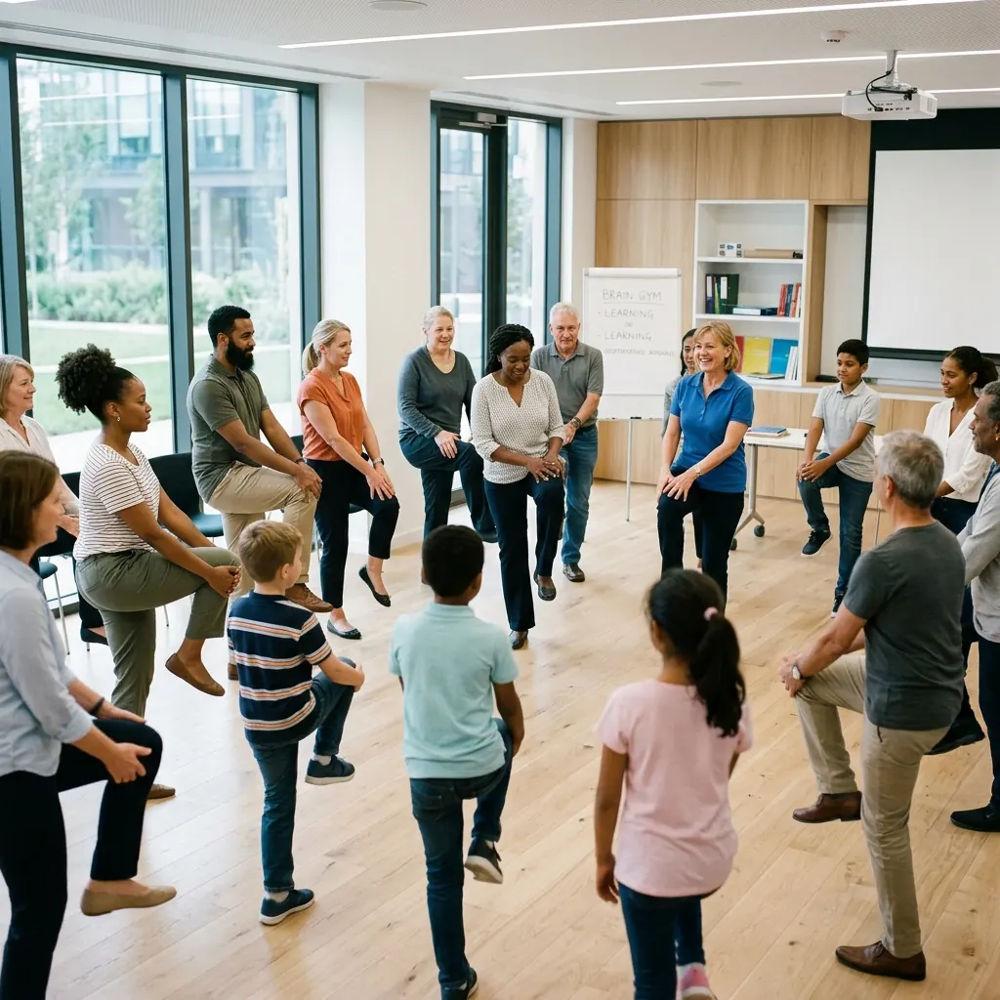

Building Corporate Cognitive Agility with Educational Kinesiology
What if the key to sharper executive focus, stronger memory retention, and improved corporate agility wasn't found in a new strategy - but in how your body moves?

Claudina Hafenscher
COMENSA Accredited Senior Coach & Educational Kinesiologist

Corporate environments mandate continuous learning, high-stakes decision-making, and rapid adaptation. When executives fail to process new information effectively, the problem is rarely a lack of intellectual capacity. Often, the barrier is physiological.
Educational Kinesiology (Edu-K) provides a structural solution. Originally developed in the 1970s by Dr. Paul E. Dennison, Edu-K is built on the premise that physical movement is fundamentally tied to cognitive function. When applied to a corporate setting, Educational Kinesiology and its primary program, Brain Gym®, offer executives practical, movement-based tools to disrupt stress responses and restore whole-brain processing.
What Is Educational Kinesiology in a Corporate Context?
Educational Kinesiology explores how the physical body and the brain interact under pressure. The methodology demonstrates that chronic stress - the baseline state for many leadership teams - forces the brain into survival mode, cutting off access to higher-order executive functions.
Edu-K focuses on moving professionals between two distinct cognitive states:
Integrated Processing
The optimal state where both hemispheres of the brain communicate efficiently. This facilitates creative problem-solving and rapid data synthesis without strain.
Hemispheric Dominance
A stress-induced state where one hemisphere takes over. This creates cognitive bottlenecks, rigid thinking, and an inability to process complex variables.
To overcome these neurological blocks, Edu-K utilizes structured physical movements designed to repattern the nervous system, encourage cross-hemisphere communication, and restore operational clarity.
The Brain Gym® Program: Movement for Executive Function
The most widely recognized application of Educational Kinesiology is Brain Gym® - a proprietary program used internationally in over 87 countries. This program consists of 26 targeted movement activities designed to integrate the body and mind, specifically engineered to downregulate the autonomic nervous system.
In high-performance corporate settings, leaders utilize these exercises to achieve:
- Extended periods of deep focus and concentration
- Faster assimilation of complex strategic data
- Improved emotional regulation during high-conflict negotiations
- Rapid recovery from meetings or tasks that cause cognitive fatigue
Establishing the Baseline: The PACE Routine
A foundational sequence in Brain Gym® is PACE - an acronym for Positive, Active, Clear, and Energetic. This four-step routine serves as a rapid transition protocol, preparing an executive's nervous system for deep work or critical decision-making. The steps are executed in reverse order: E → C → A → P.
Restore hydration and prepare the body to benefit from the subsequent exercises. The first step in readying the nervous system.
Place thumb and finger in the depressions below the collarbone while the other hand rests over the navel. Move eyes slowly left and right to restore centralised vision and stimulate blood flow.
Rhythmically touch one hand to the opposite knee, then alternate. Simultaneously activates both sides of the body, firing neural pathways in both hemispheres.
Cross the ankles and wrists, breathe deeply (Part 1), then uncross and touch fingertips together (Part 2). Restores physiological equilibrium and supports higher-order thinking.
Targeting Specific Operational Skills
Beyond the PACE baseline, specific Brain Gym® movements address discrete cognitive friction points:
Draw a large sideways figure-eight in the air or on a board, tracing it with each hand. This integrates visual fields across the midline, improving reading speed and accuracy when processing dense reports.
Glue your head to your shoulder and draw a large sideways eight in the air with an outstretched arm. This movement activates whole-body integration, sharpening active listening and information retention during complex briefings.
Gently hold two points on the forehead halfway between the hairline and the eyes. Activates the body's stress-release response, enabling rapid emotional regulation and preventing reactive decisions.
Evaluating the Evidence
When implementing somatic practices in corporate environments, transparency regarding the scientific foundation is essential. While clients consistently report strong qualitative outcomes, empirical validation requires nuance.
Numerous scientific reviews have noted a lack of rigorous, peer-reviewed empirical evidence proving that Brain Gym® directly improves academic skills or cognitive deficits in isolation. The theoretical foundations around "neurological repatterning" are widely considered pseudoscientific by mainstream neuroscience. However, it is well-documented that physical activity and movement in general do increase on-task behaviour, blood flow, and neuroplasticity - and this is where Brain Gym® derives much of its real-world benefit.
At Have & Share, we integrate Educational Kinesiology as part of a broader life coaching toolkit - alongside mBIT Coaching and Positive Intelligence (PQ®) - recognising that the body-mind connection is real, even where the specific mechanisms are still being studied. Our individual life coaching programme draws on all of these approaches to meet each client where they are.
Cognitive Agility Requires the Body
Educational Kinesiology provides a pragmatic, movement-based framework to interrupt stress responses and engage the whole brain. By incorporating routines like PACE before critical meetings, leadership teams can approach operational challenges with an integrated, highly functional mindset.
The most overlooked asset in corporate performance is the physiological state of the executives executing the strategy.
Build Resilience at the Root Level
Evaluate how Educational Kinesiology supports our broader framework for executive function. See how somatic intelligence integrates with corporate leadership development.
Ready to talk this through?
If this sounds close to what you are carrying, start with a low-pressure WhatsApp message or book a free discovery conversation with Claudina.
No credit card required. A low-anxiety, zero-obligation chat to see if we are a fit.